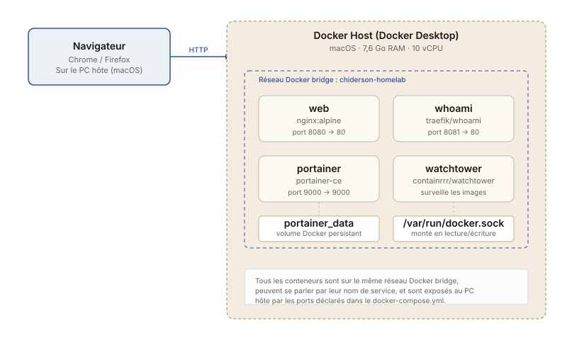
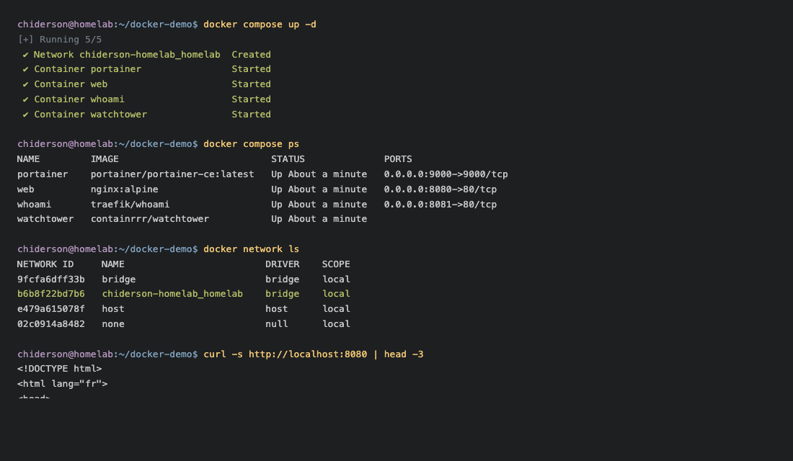
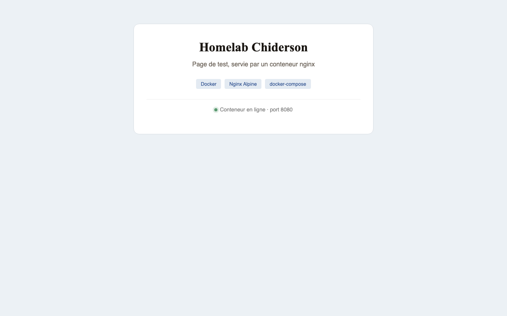
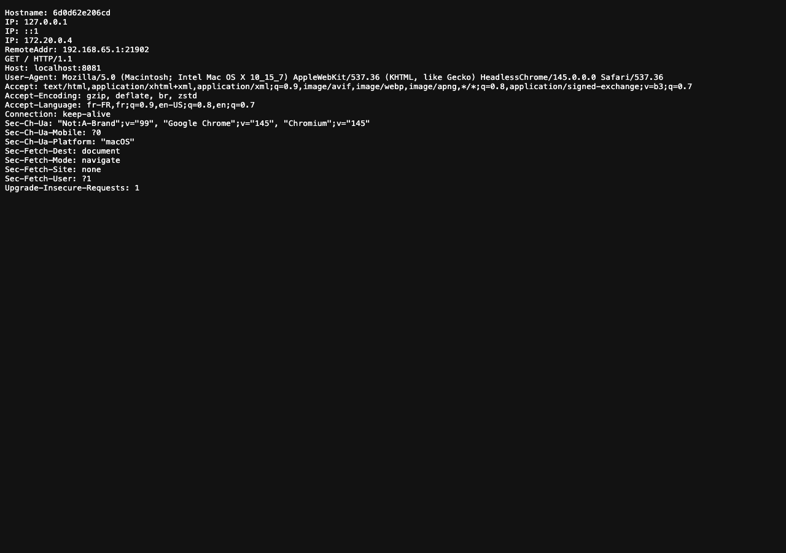
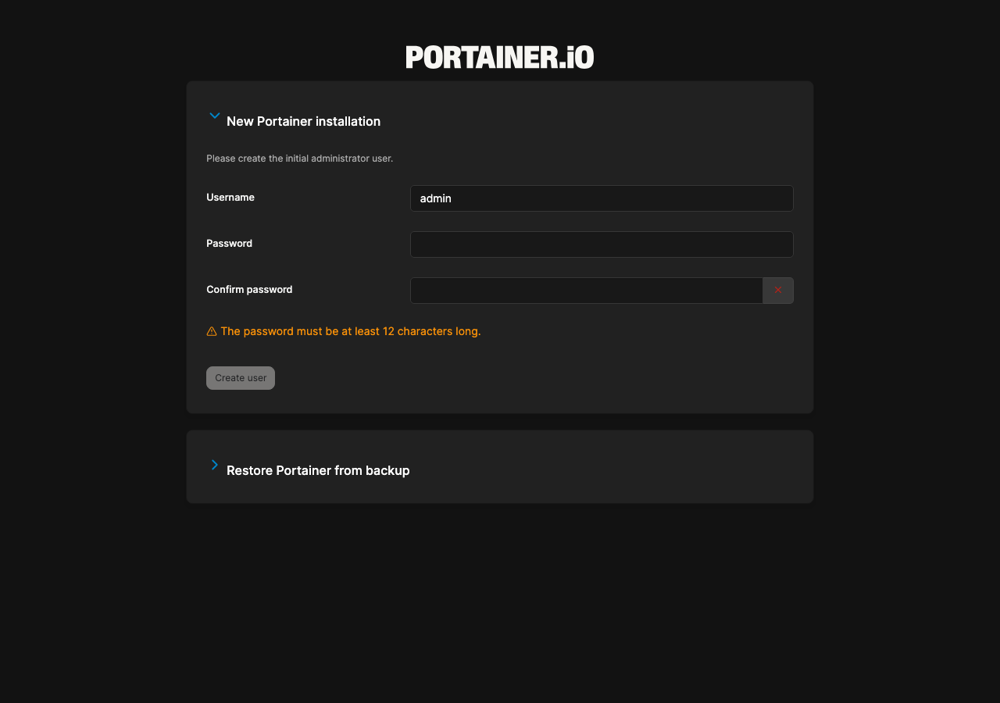

Conteneurisation des services du homelab
Migration des services persos vers Docker, pilotés par docker-compose et accompagnés de Portainer pour la supervision.
Pourquoi conteneuriser
Sur mon homelab, je faisais tourner chaque service dans sa propre VM Proxmox. C'était propre mais lourd : chaque VM mange 1 à 2 Go de RAM rien que pour faire tourner Linux. Sur trois mini-PC j'arrivais à saturation au bout de douze services.
Docker permet de faire tourner plusieurs services dans des conteneurs très légers (juste l'application et ses dépendances, pas un OS complet à chaque fois). Et c'est trivial à redéployer : un fichier docker-compose.yml, une commande, et tout repart à l'identique.
L'architecture

Les quatre conteneurs partagent un réseau Docker dédié (chiderson-homelab) et sont exposés au PC hôte par des ports différents.
Le fichier docker-compose
Tout est dans un seul fichier que je versionne sur mon GitLab privé. Pour ajouter un service, je rajoute un bloc, je tape docker compose up -d, et c'est en ligne.
name: chiderson-homelab services: portainer: image: portainer/portainer-ce:latest restart: unless-stopped ports: ["9000:9000"] volumes: - /var/run/docker.sock:/var/run/docker.sock - portainer_data:/data networks: [homelab] web: image: nginx:alpine ports: ["8080:80"] volumes: ["./html:/usr/share/nginx/html:ro"] networks: [homelab] whoami: image: traefik/whoami ports: ["8081:80"] networks: [homelab] watchtower: image: containrrr/watchtower volumes: ["/var/run/docker.sock:/var/run/docker.sock"] networks: [homelab]
Chaque service expose son port, monte ses volumes éventuels, et rejoint le réseau commun. Watchtower est branché sur la socket Docker pour pouvoir mettre à jour automatiquement les autres conteneurs.
Le déploiement
J'ai pris cette stack en exemple pour ce dossier : je l'ai vraiment fait tourner, voici les preuves de ce que ça donne en console.

docker compose up -d et docker compose ps après démarrageLes services qui tournent
Le site web (nginx)
Le conteneur nginx sert une page HTML statique depuis un volume monté. C'est l'équivalent d'un site personnel. Accessible sur le port 8080.

Whoami (debug réseau)
Whoami est un petit service Go qui répond avec les en-têtes HTTP de la requête, son hostname dans le conteneur, et l'IP cliente. Très utile pour vérifier qu'un reverse proxy fait bien son travail ou que le réseau Docker se comporte comme prévu.

Portainer (gestion graphique)
Portainer est une interface web qui permet de tout gérer à la souris : conteneurs, images, volumes, réseaux, logs en temps réel. Pratique pour vérifier l'état d'un service en deux clics au lieu de taper plusieurs commandes.

Les pièges rencontrés
Permissions de volumes
Au début, certains conteneurs refusaient d'écrire dans leurs volumes parce que l'utilisateur dans le conteneur n'avait pas les droits sur le dossier hôte. La solution c'est de bien gérer le chown au niveau du dossier hôte ou d'utiliser user: dans le compose pour fixer l'UID du process.
Watchtower sur Docker Desktop macOS
Watchtower a besoin d'accéder à la socket Docker. Sur Linux c'est direct, sur macOS Docker Desktop le passe à travers une VM. Le conteneur a redémarré en boucle quand je l'ai testé. Sur un homelab Linux il fonctionne sans souci.
Le ménage des images
Au bout de quelques mois, le disque se remplit d'images obsolètes. docker image prune -a régulièrement, et limiter Watchtower à ne garder qu'une seule version en arrière.
Ce que j'ai appris
La différence entre une image et un conteneur, je la confondais avant. L'image c'est le modèle, le conteneur c'est l'exécution. On peut lancer dix conteneurs depuis la même image.
Et Docker n'est pas une solution magique. Il faut comprendre les volumes, les réseaux, les permissions. Sinon on a juste déplacé la complexité d'un endroit à un autre. Mais une fois compris, c'est extrêmement puissant pour faire tourner des services rapidement.